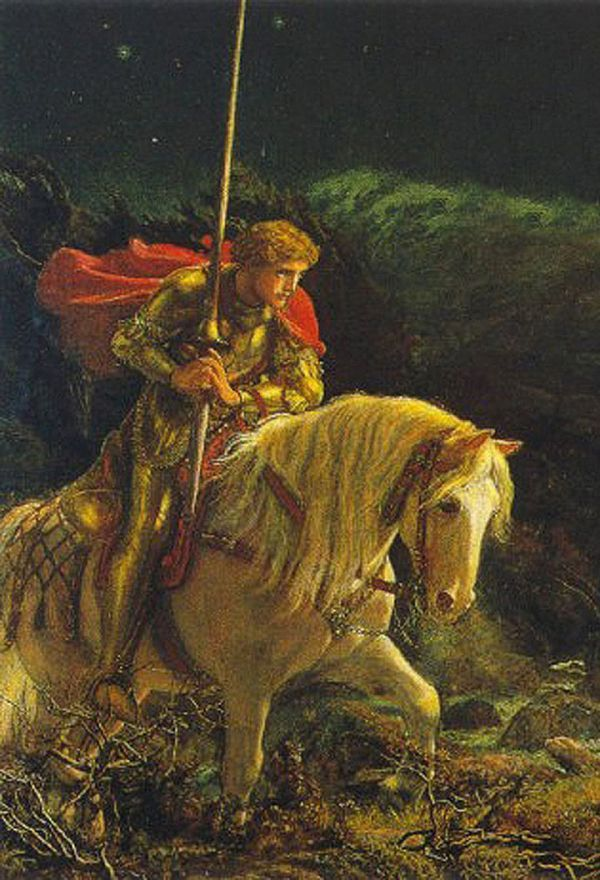

Rey Luan Bosstreal
Luan era el menor de tres hermanos, e hijo del temído y respetado Rey Tulvan Bosstreal. A la edad de catorce, Luan estuvo muy enfermo y los médicos no le daban mucho tiempo de vida. Al mismo tiempo, su padre emprendería un viaje de negocios acompañado de sus otros dos hijos, del cual no volverían. Una imponente tormenta hizo desaparecer el barco en el cual viajaban, y nunca se encontraron rastros del mismo ni sus tripulantes. Dejando así como último integrante de la dinastía Bosstreal al joven y enfermo Luan. Al enterarse el destino de su familia, repentinamente Luan comenzó a mejorar tan rápido que la gente de Arcandris comenzó a decir que habia hecho un pacto con Hisnal, el Duengo o demonio de la Salud.
Sir Ruin Bosstreal
Ruin era un niño huerfano que vagaba por las calles de Arcandris, una tarde soleada estaba vendiendo frutas en el centro de la ciudad cuando fue sorprendido por un extraño encapuchado que buscaba manzanas, el hombre comenzó a preguntarle por su vida y al irse le dejó muchas más monedas que el valor de la compra. Ruin le avisó al hombre de su error, pero este le respondió que no lo era, mientras se perdía entre la gente. Días más tarde dos guardias del Rey llegaron con una invitación real para asistir esa tarde al castillo central, firmada por el Rey. La sorpresa de Ruin fué inimaginable, y más al saber que el hombre que lo había visitado días antes era el mismo Luan Bosstreal. Desde ese día Luan comenzó a tratar a Ruin como un hijo y años después le daría hasta su apellido. En varias oportunidades comentó que se veía a él de niño, reflejado en Ruin.
Sir Carlos Chandellaer
Carlos es la mano derecha y fiel amigo del Rey Luan. Un experto en combate y comandante de las tropas de Arcantris. Es una persona que transmite muy buena energía, siempre de buen humor y haciendo bromas, pero al mismo tiempo puede llegar a ser muy peligroso, dotado de una inteligencia y hablidades fisicas superiores al resto. Reconocido por ganar la batalla de Claroscuro, comandando y llevando a cabo un plan magistral contra los forajidos del clan de los Dos Estrellas, exterminandolos contundentemente, sin sufrir casi bajas.
Sir Brick Mund
Brick Mund es el menor de dos hermanos, hábil con la espada y el escudo, gran jinete y mujeriego. Actualmente es guardia personal de Ruin Bosstreal, aunque pasan la mayor parte del tiempo jugando ajedrez. La diferencia tan grande de edad con su hermano, genera a menudo conflictos entre ellos.
Zair Mund

Zair Mund es el mas antiguo de los consejeros reales. Ademas es lider y leyenda del gremio "Los Pensamientos". Supervisa la economía del castillo y tiene a cargo una docena de empleados que maneja dentro de las arcas de oro. Es una persona muy respetada, aunque no tiene muy buena relación con la mayoría.
Alvin Galonel
Alvin Galonel o más bien conocido como "El hombre del rostro de piedra" es un siniestro personaje que vive a las afueras del castillo de Arcadris, adentrado en el bosque. Se dice que nació con una paralisis en la cara, aunque pocas veces se lo ha visto sin la armadura, con un casco completo que simula una cara en acero negro En la época de guerra fué un temído sanguinario con una fuerza y agresividad brutal.